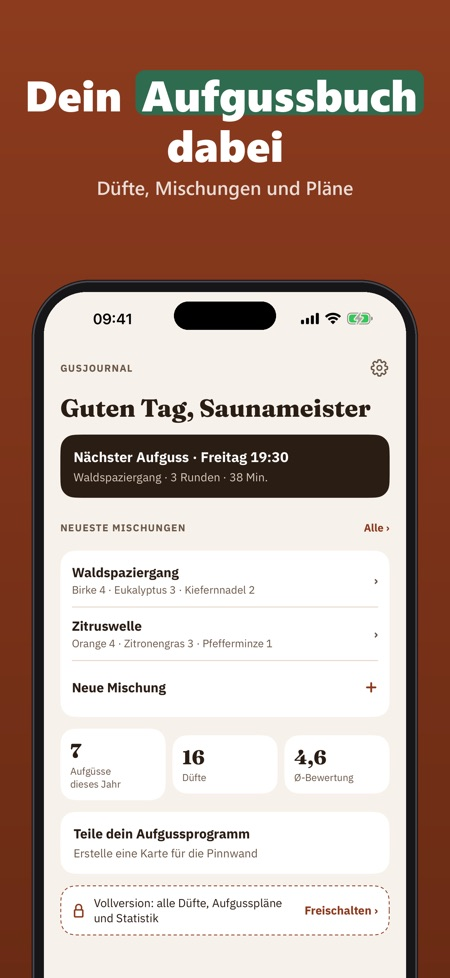
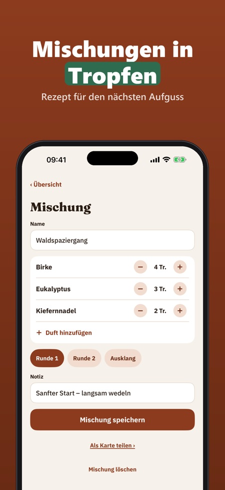
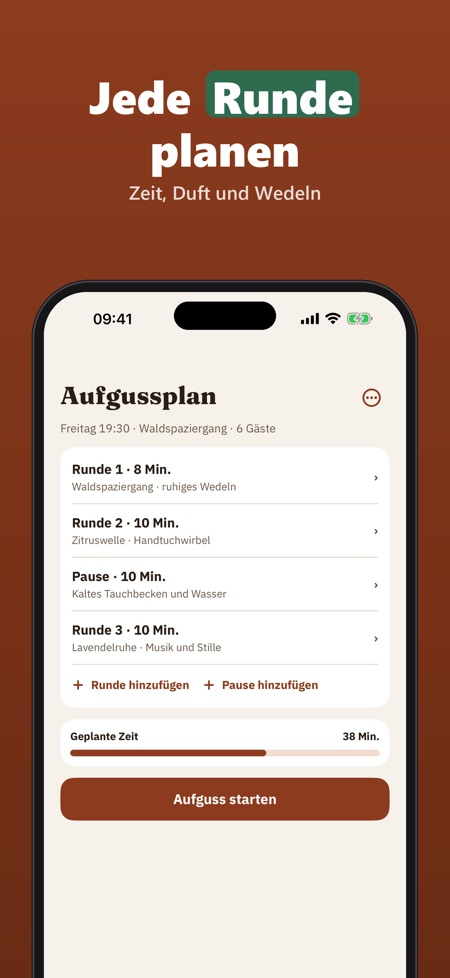

Düfte, Mischungen, Aufgussplan. Die Saunasaison läuft: 21 Düfte mit Notizen, eigene Mischungen, Aufgussrunden mit Timer planen und jeden Aufguss festhalten – auch ohne Internet.



Gusjournal ist das Notizbuch für alle, die Saunaaufgüsse machen: Düfte, Mischungen, Aufgusspläne und Tagebuch an einem Ort.
Tagebuch, 10 Düfte und 3 Mischungen kannst du ohne Kauf nutzen. Die Vollversion ist ein Einmalkauf und schaltet alle Düfte, Aufgusspläne mit Timer, Statistik und Teilen-Karten frei. Kein Abo.
Gusjournal ist ein Notizbuch und gibt keine Gesundheitsratschläge. Beachte immer die Herstellerangaben für ätherische Öle.